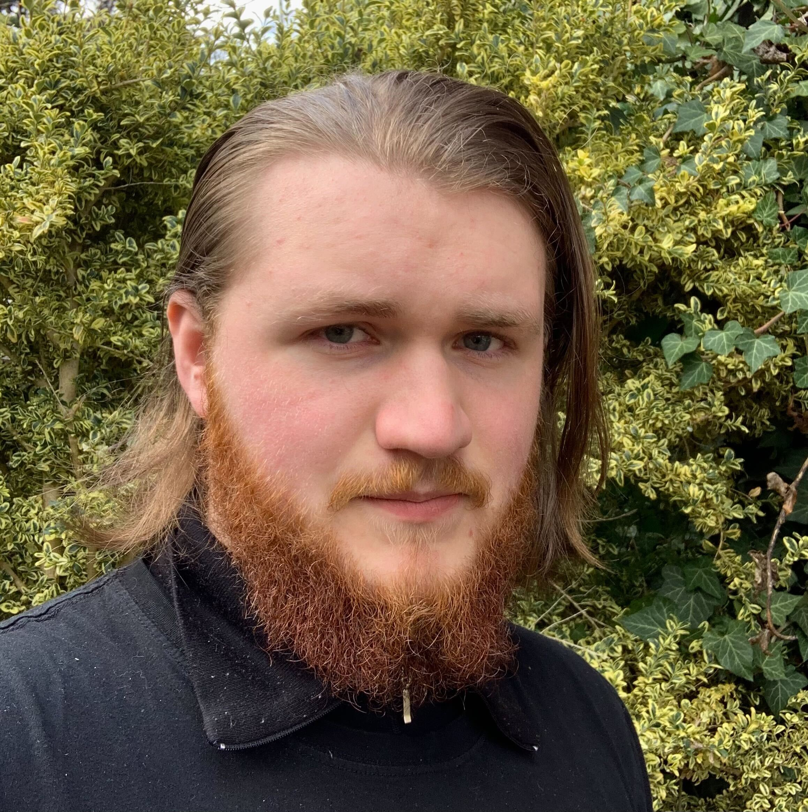
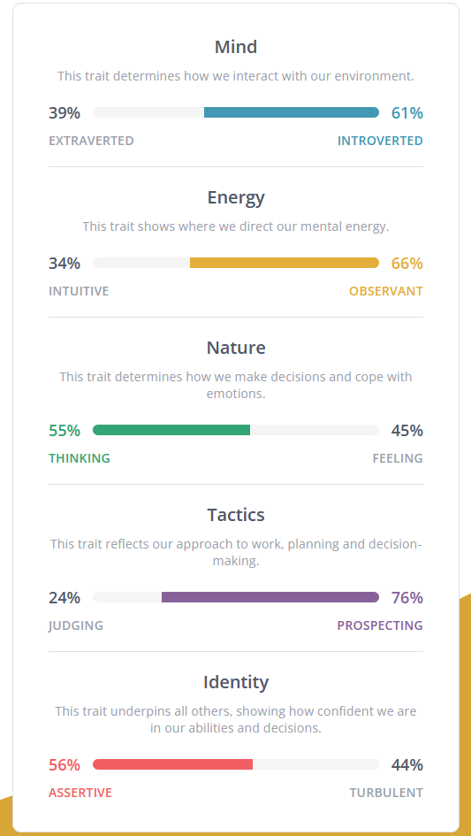
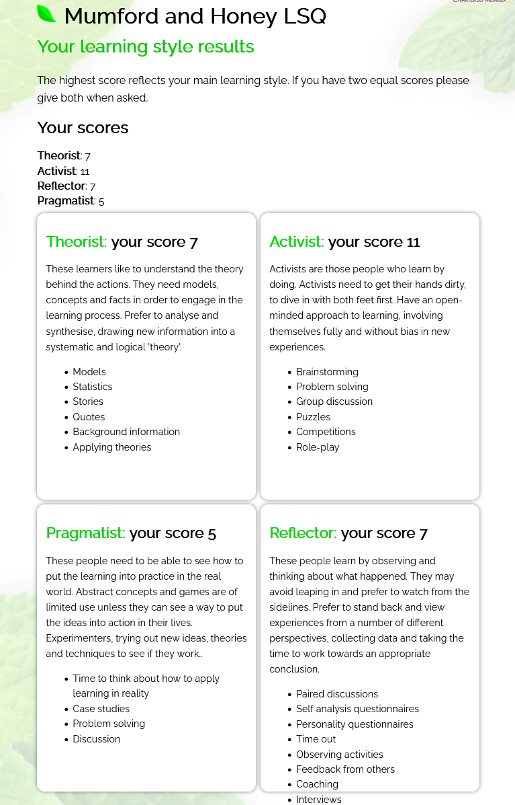

Lachlan Deck, assingment 1
Personal infomation:
Name: Lachlan Deckstudent ID:s3976017
student email:s3976017@student.rmit.edu.au

contents:
A brief history of mePersonality!!!!
Why I am, the way I am
What do these results mean to me?
The Big Five Personalities Test
How I think this relates to teamwork
why am I here?
Why RMIT?
Ideal Job
Project Idea
References
A Brief History of me
I was born in the United States of America, grew up in Tasmania from ages 1-13, where I exclusively lived on a 32ft motor sailing yacht. My family then moved to Melbourne, and shortly after, to Bangalore India for 9 months, then back to Melbourne. I “dropped out” of high school to study as a chef at The Gordon Tafe, and after graduating and moving to creswick Victoria, I began working in Daylesford, which is where I am now. Probably the most influential part of my life was growing up on a boat, cruising around Tasmania. The compact and stressful way of life colored a lot of the way I was raised, and the ways I grew used to crisis/adversity, but I’ll talk more about that in my-
Personality!!!!
My reaction to the Myers Briggs test:
So, the Myers Briggs test, thinks I’m a mildly assertive introvert, who tends to observe and think about things before applying a very prospective style of working... I think I see why people are so quick to discredit this test, because this barely resonates with me, I feel as if I've been described by another person rather than thoroughly analyzed by a scientific method. Individually I can agree with these tendencies, however. I would describe myself an introvert, with a fairly dominant personality, and an undisciplined work style. I do think my “nature” is quite middle of the road, though with a strong passion for social analysis.
Why I am, the way I am
One thing I note is how contradictory my results were, assertive but introverted. observant, thinking, yet prospective. If I was to explain, I would say this is because my behavior is learnt rather than natural thing about myself that I discovered. The way I do a lot of things is strongly informed by the way I think I should do them; the way role models have done, rather than what I would, if I simply reacted.
I would attribute this style of thought to growing up entirely around adults. All the socialization outside of school I had was with adults, this led to me just being different than the other kids at school - I was a child trying to model adult behavior. This is constant trying to act in a way that I wasn’t mentally mature enough to is half the story.
The second half is that my parents put a strong emphasis on independent thought. When I was young and petulant it was never enough to tell me to tie my shoes, or even why I needed to tie my shoes. I had to be persuaded to agree that tying my shoes was something that I agreed with in policy, and something that I should want to do... I was a painful kid to raise.
My tendency to have very strong opinions about my way of doing things comes from constantly fighting over the reasons I should think a certain way during my childhood. It’s why I think I have such conflicting tendencies, because they are behaviors I’ve adopted and made a part of me rather than ones I’ve discovered or relaxed into. This isn't to say I’m constantly at war with myself over how I should think, at this point in my life I'm very confident in my understanding of how I feel and I’m happy to follow my gut.
Mumford and Honey LSQ
What do these results mean to me?
Activism
My main style of Activism to me represent a fair bit of growth in the last 5 or so years that I'm quite proud of. I wasn’t always so passionate and driven to explore what’s in front of me. I have a love of problem solving, I’d say so deep that it’s more a love of problem engagement, not something I’d put on a resume. In fact, I’d say a flaw of mine is that is that I'm less motivated to solve problems I’m not immersed in and connected to.
Activisms favor of brainstorming, and group discussion also resonates with me. And I find the Role play note downright hilarious because I’m an avid D&D player. In fact now that I mention it, D&D engages many of the activism traits all at once.
Theorist
I think my theorist tendencies come from a lot of what I talk about in my personality test analysis. coming at something from a perspective of understanding it in theory is just how I come at things. My constant trying to characterize what I'm doing leans me towards a theoretical approach
Reflection
I think my reflection tendencies are linked to my activism’s wanting to be connected to problems. A lot of learning is theory and when I can’t immerse myself in a thing physically, I do it in my head instead. To me activism and reflection are quite tangled up in my head, I do a lot of the “get your hands dirty” of activism by exploring it in my head, often after the fact.
The Big Five Personalities Test
my resultsWell this test more or less fell in line with the previous 2, but I found it interesting how little I scored on the anxiety metrics. I was diagnosed with chronic anxiety as a child, and I’d consider myself very accustomed to stress. Both in dealing with it, and in experiencing it. It’s a weird two fold experience, on one hand I stand by my responses to the questions, on the other, stress, anxiety, self-doubt have been very persistent things for me. I’m unsure weather I’m projecting my current state of mind of being pretty confident in myself, or if I’m in denial about how anxious and self-doubting I am.
How I think this relates to teamwork
In a team scenario I think I will do better with other more assertive members, my way of evolving my understanding requires discourse to go anywhere. I’m happy working to better include other people in that discourse, and I understand that will sometimes require changing my approach. but I struggle to empathise with people who haven't given me much to go off
I think it will be crucial to keep my head out of the weeds and on the bigger picture, I’m naturally going to want to run off and dig deep into my own thing. so, making sure what I do is in tandem with other team members will be important, especially if other members aren’t naturally given to communication and need to be actively included in the conversation.
What I expect to happen is there will be several people who do most of the talking, and what tends to happen is people who struggle to engage with that core group drift to the sides. So, I think when grouping up, making sure I’m aware of how other team members prefer to be engaged with will be important. Especially when remote there’s less margin for error with communication and as we’re all new to working with each other, adaptability will be key, as well as keeping everyone appraised of the adaptations that are made.
Conflict resolution
I see two types of conflict being most likely in the coming activities; someone’s not communicating/not doing work, or there’s a disagreement about the direction the group or an individual is taking with the work.
The 1st conflict, the one where someone’s just hard to get a hold of is the one I think I’ll struggle with the most. I think the way ill try to deal with this is to ask questions with easy responses. Questions where the person won’t feel like they need put in a lot of effort to answer, and ones where they don’t feel accused of anything. With this conflict I need to remember the first issue is that they’re not talking, the 2nd issue is that they may be behind on work.
The 2nd style of conflict is the one I’m more confident in my ability to work out. Just like before the biggest thing to avoid is making someone feel driven out of the group. If I felt socially rejected from a group, and unwanted for anything but my raw labor, I would really struggle to motivate myself to do good work. Avoiding making a team member feel like this is-I think- the most important thing when dealing with a disagreement on “direction”. So as for resolving the conflict, I think discussing our options as they relate to how we’re graded will be ideal. Making sure that my understanding of why I think we should do it a certain way is reasonable and supported by our rubric and being very open to change when its not. I’ll have to remember in age I’m the junior of most other course members, I’ll probably be the one who needs to make an adjustment
why am I here?
Career goals
I find IT’s focus on collaboration, as well as potential for work anywhere in the world, extremely appealing. So, my aim is to pursue that in my career. This means a lot of effort and focus for me will be on people skills, as well as developing technical skills in areas with the most potential for growing a career in management track, which is the direction I want to go.
Something I’ve noticed in role descriptions is that the skills requirements are very broad but often have an area that they want previous experience in, such as this software dev manager for the CloudFront quickstep team at AWS, which has a strong requirement for experience with very large-scale products.
this gives me the impression that there are “verticals” or “clubs” to career progression, I think understanding them will be key to controlling my trajectory
the posting of the jobinterest in IT?
My interest in IT started about 2 years ago, which is odd because my father has been working in IT my whole life and previously I’d planned on avoiding the field. I became interested in the going in at his work when covid happened and he started working from home. It sounds odd to say but I was drawn to how much the problems he delt with mattered, unlike at my work where pretty much any problem could be solved by just buying a thing or by somebody just taking some time to actually change a workflow to something that made more sense. The problems I would hear of around the dinner table were awesome!
This story was the tipping point:
So, several teams were working on a product called sandpit, which was a big part of the company’s plans for attracting bigger customers. the idea was that it was a sandbox environment where customers could preview changes to their versions of the service. The issue was, the way the core product is built makes versioning very hard, in fact there is no “previous version” to roll back to, only settings to change. This wasn’t an insurmountable issue; however the director of these teams was a very old member of the company and had personal issues with the head of product who was responsible for sandpit in the 1st place. This all came to a head when the head of the product found out how badly development was going, and the director of the teams accepted a role at a different company and quit.
Now the story of hiring the replacement is its own saga, but problems like these are what draws me to IT. So despite having no technical experience with IT, here I am, studying, so that one day I’m the one explaining how and why something’s a problem and how it needs to be handled.
Why RMIT?
I’d heard good things about RMIT before becoming a student but given my schooling history I wasn’t sure if I’d be able to study here. But I called OUA one rainy afternoon to ask about my options for studying computer science, and to my surprise they had me enrolled in the course in the next 15 minutes. So it all happened quite fast and I was never really looking anywhere but RMIT
What do you expect to learn during your studies?
I expect RMIT will have a strong focus on developing our technical skills while working in a group setting. Were seeing it already in our webinars in IIT and id be surprised if this approach wasn’t the norm. I also expect to explore most software aspects of computer science, as well as more theory and design based aspects of software development; such as how to build tools with future compatibility in mind, and how to scale projects. But in all honesty, I have no Idea what we’ll cover and I expect gaining work experience through internships to be a huge part of the learning universities struggle to cover.
Ideal Job
When I talked about my career goals, I said that I wanted to pursue management track, and while that is 100% the case, I instead want to select an experienced developer role to talk about in detail. I want to do this for a couple of reasons:
Firstly, the manager of a CloudFront dev team is a long way off for me, so much so that I’m pretty sure I’m years away from even knowing what I don’t know about a job like that
Secondly, the sort of role that I am talking about will be a steppingstone to the more senior roles that I eventually want to hold. In short understanding this role and how to get there is just, if not more, important than understanding the exact path to my long-term goal.
So, what role am I discussing? Software development engineer at the CloudFront quickstep team, Dublin Ireland
job postingThe quickstep team is responsible for building “Quickstep” which is a high-performance caching server, for amazons CloudFront. They are looking for applicants comfortable with agile, large-scale systems, web design, a modern programming language like rust, C/C++ or c#, and architecture/design. As well as ~5 years’ experience. Please refer to the actual job description for the specifics, because I want to talk more about why I want a job like this, why amazon, why Dublin, why cloud…
So, I have this impression that there are “rockstar” fields at companies, e.g. investment bankers at banks, fighter pilots in the air force, and web developers at Amazon Web services. I think its just a better situation to be in the place that a company is investing in and growing rather than an area the business considers a cost. the most attractive career advice one liner I’ve heard was “always be in an environment that wants to develop you”, so that’s why I want to do something in an area that people are heavily investing in, like cloud services.
Why AWS? Well, it’s in the name, but its not just that amazon are probably the biggest name in cloud right now. It’s also about what I mentioned in my goals section about “clubs” FAANG companies are clubs, although they’re a massive pain to get into, and probably a stressful environment to boot, I think pursuing a vertical in my career will be very important, and I think amazon could be that for me.
Now, why Dublin? Well, honestly the USA would be a better option. For starters I have US citizenship, and while the US is where I’ll probably end up, I’d like to retain some semblance of dream and less abysmal health care in this assignment. Dublin is no slouch as far as tech hubs go, and Ireland has a similar feel to Tasmania where I grew up. Ireland also emphasizes one of the big draws of IT to me and that’s how you can find work in so many cool places, while you can’t buy land for love or money in Dublin, there are little hubs out of the city where companies like amazon have put down offices and laid down fiber optic cable, I would LOVE to live in a quaint town and work from home in a place like that… dream life for me.
Project Idea
Overview, project Slack-as
A program that displays RMIT discussion forums in a much more accessible format. Slack-as will have 2-parts. A program in outlook that forwards the canvas notification emails to a slack bot, that will live on dedicated slack server and create a replica of the RMIT discussion forums. It will have separate channels for each discussion it will post all the replies to the discussion it that channel, the replies to those will be in a thread below. a stretch goal is to do this for every classes’ forums, giving any student the ability to read any forum.
But why tho?
Why? Because every problem the forums have has been solved by slack, and I’m not one to exaggerate or give unconstructive criticism, but good lord i have a lot of problems… specifically, the forums are accessed in different ways, the modules, and the discussion tab, it makes it hard to find old posts, and hard to respond to replies. The biggest one for me, that the notifications are over email, like email has its place but walls of notification text spammed 5 times a week isn’t it. In my humble opinion this should have been on slack from the start.
Description
the bare minimum of this project is a bot that can recognize the headings in the email updates we get and automatically post that update to the relevant slack channel
this will be achieved by making the slack-as app and having it read the headings and check keywords against existing slack channels, then posting the text under that heading, to the channel with the name associated with those heading keywords. If a heading can’t be sorted and sent it will be posted to a manual sort channel, this will allow us to easily know what forum threads need channels.
The slack channel will be made manually, by a human, though it’s a stretch goal to have slack-as automatically make the channels it needs to post in, initially the channels will be manually made.
One of the main benefits I see of even this bare bones version of the project is that its still also a slack server, as an avid “slacker” the idea of having the forum content available on a slack server is really appealing.
Now these are the features I’d like to have, but may be ahead of our group’s capability:
- The bot to follow the “click to view link” and grab the full next of the forum post and post it in the relevant slack channel
- More than one person to be able to send emails to the bot, allowing everyone to view the forum discussions of all classes.
- make it able to recognize duplicate emails and content. What if it gets sent the same LMS email twice? what if information is copied from one forum to another? Hopefully we will be able to solve these issues, but these are nice to haves.
- The slack server will be a free one, this means it will only keep 90 days of history, so the bot will need to somehow*tm re-post old content while maintaining the original order of posting.
- The server itself to also have to have an account system, so that other people can access the server. ideally students will log in with their RMIT credentials, this would allow us to use this server long after this current course is done. Again this may be quite easy or quite hard, definitely something we will try to make happen but not the core of the project
- Create slack channels. Make the bot capable of responding to changes to the forums, automatically, and be able of taking existing channels and editing content as it changes and edited on the forums.
After some feedback I also want to talk about why do it through email, and not by just scraping it from the website itself with the freely available script that has already been made? Well for starters this is a less “hacker man” way of doing, more legit if you will. Forwarding emails to a bot is also much simpler to get a volunteer to do rather than making them run a script. In general, I found email appeared to be a much more scalable solution, and one that uses much more consumer-friendly software.
Tools and Technologies
Slack, most of the project takes place on a slack server, slack is mandatory
Maker, or a similar tool, I haven’t done enough research in the space to say maker is the best option but it’s viable and is the easiest to use.
Bolt for python, bolt is the way slack recommends designing slack apps in python
Block kit builder for slack, block kit is the API we’ll use to actually read and post the text, I plan to use blockit instead of the RTM API because its better suited to large modular posts, where as RTM api is more in the vein of a typical discord server bot.
We will also need to build the thing that reads and understands the emails that contain the content of the forums. It may be possible to use an existing online chat bot to do this, but some piece of technology needs to.
Skills Required
While slack isn’t hard to work with being able to is important, maker is designed to be fool proof and should be as basic as slack. Bolt will require competency in python. decent understanding of how RTI works. Block kit builder will be the API that handles the visual and “posting” of the forum text, understanding how to use block kit to do this is crucial, particularly getting it to generate posts with new information automatically. Understanding how to build or use an AI chat bot that does the core work of reading and categorizing the emails we feed it.
Outcome
There will be an easy to read, easy to access, version of the canvas forums. It will keep everyone with access appraised of everything going on in all class forums. It will bring the power of slack to the information in the forums, users will be able comment on forum posts in huddles, dm’s, and in the open sections of the server (open meaning the parts that aren’t read only). The server will also be well organized not a massive text dump like the LMS emails we get, as well as being relatively easy to manage and fix when something goes wrong.
References
https://www.reddit.com/r/discordapp/comments/ij7vb1/how_do_i_forward_emails_from_my_email_to_my/https://api.slack.com/rtm
https://api.slack.com/block-kit
https://www.youtube.com/watch?v=NXIgfOU0eQw
https://www.youtube.com/watch?v=KJ5bFv-IRFM
https://www.youtube.com/watch?v=AajBk59nOgw
https://www.youtube.com/watch?v=25ArxpK48tU
https://www.youtube.com/watch?v=Weh_M1WMznU
https://www.youtube.com/watch?v=2ZlVV0MM1a0
https://www.w3schools.com/
https://www.w3schools.com/html/html_links.asp